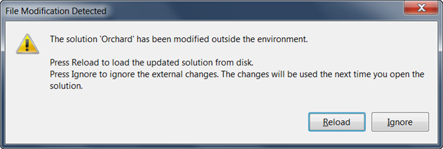
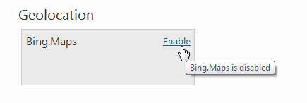
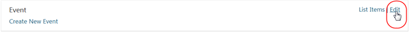
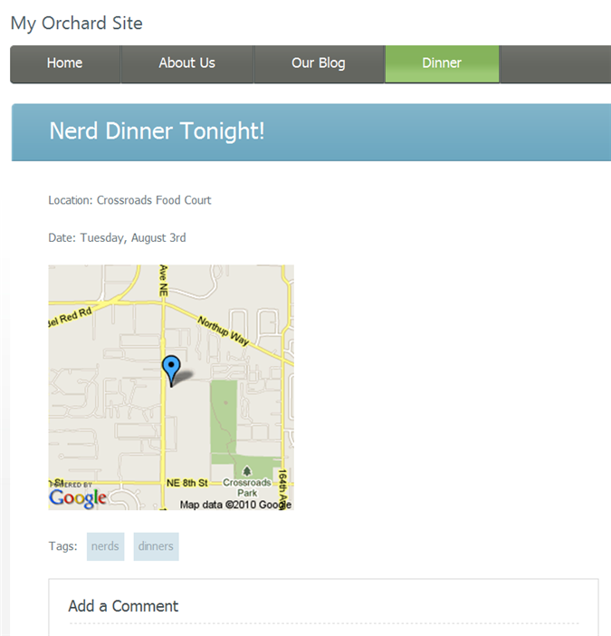

This guide has been marked for review. If you are just getting started with Orchard module development you should read the Getting Started with Modules course first. It will introduce you to building modules with Orchard using Visual Studio Community, a free edition of Visual Studio.
This tutorial walks through the process of creating a new content part from scratch, using the scaffolding feature in Orchard as a productivity tool. Although this tutorial assumes development in Visual Studio, it is not strictly necessary to have Visual Studio to develop a content part - feel free to use your editor of choice.
In this tutorial, we are going to build a custom Map part, that can be configured with latitude and longitude values in order to display a map image for a content item.
Important: Before you can generate the file structure for your module, you need to download, install, and enable the Code Generation feature for Orchard. For more information, see Command-line Code Generation.
We are going to add a new "Maps" module to contain our Map part implementation, as a new project in the Orchard solution. Assuming you have enlisted in the Orchard source tree, launch Visual Studio 2010 and open the Orchard.sln file under the "src" folder of your enlistment.

Type "codegen module Maps /IncludeInSolution:true" at the Orchard command-prompt. The "IncludeInSolution" switch tells Orchard to wire up a new Maps module project to the Orchard.sln file.
orchard> codegen module Maps /IncludeInSolution:true
Creating module Maps
Module Maps created successfully
After running this command, Visual Studio prompts to re-load the solution file. Accept this prompt.

The Maps module project appears added to the solution, along with some default files and folder to get you started.

Open the Module.txt file at the root of the Maps module project. This file defines the information about your module, such as a name, description, version, author, and a categorized of features exposed by the module. The Module.txt file can also contain additional information such as dependencies, which we will not cover here. Our module is pretty simple, and only contains a single "Maps" feature with no additional dependencies. Edit the Module.txt file as indicated below.
Name: Maps
AntiForgery: enabled
Author: The Orchard Team
Website: http://orchardproject.net
Version: 1.0.0
OrchardVersion: 1.0.0
Description: Adds a map image to content items, based on longitude and latitude.
Features:
Maps:
Description: Adds a map image to content items, based on longitude and latitude.
Category: Geolocation
Now let's begin to write the Map part. To begin with, we need a class to contain the data for the part. Data classes are conventionally added to the "Models" folder of the project. Right-click the Models folder in Visual Studio and choose "Add > Class" from the context menu and name the new file Map.cs:

In Orchard, content part data is represented by a Record class, which represents the fields that are stored to a database table, and a ContentPart class that uses the Record for storage. Add the MapRecord (ContentPartRecord) and MapPart (ContentPart) classes as follows:
using System.ComponentModel.DataAnnotations;
using Orchard.ContentManagement;
using Orchard.ContentManagement.Records;
namespace Maps.Models
{
public class MapRecord : ContentPartRecord
{
public virtual double Latitude { get; set; }
public virtual double Longitude { get; set; }
}
public class MapPart : ContentPart<MapRecord>
{
[Required]
public double Latitude
{
get { return Retrieve(r => r.Latitude); }
set { Store(r => r.Latitude, value); }
}
[Required]
public double Longitude
{
get { return Retrieve(r => r.Longitude); }
set { Store(r => r.Longitude, value); }
}
}
}
Now build the Maps project to ensure your Record class compiles successfully.

Next, we are going to create a data migration for our Maps module. Why do we need a migration class? The reason is that defining a Record and Part class to store the data doesn't actually impact the database in any way. A data migration is what tells Orchard how to update the database schema when the Maps feature is enabled (the migration runs when the feature is activated). A migration can also upgrade the database schema from prior versions of a module to the schema required by a newer version of a module - this is an advanced topic that won't be covered in this tutorial.
To create a new data migration class, you can use the Code Generation feature of Orchard. Run "codegen datamigration Maps" from the Orchard command-line.
orchard> codegen datamigration Maps
Creating Data Migration for Maps
Data migration created successfully in Module Maps
Visual Studio prompts to re-load the solution again. After accepting this prompt, the new data migration classes appears in the project.

The migration class added by the codegen command contains a single Create() method that defines a database table structure based on the Record classes in project. Because we only have a single MapRecord class with latitude and longitude properties, the migration class is fairly simple. Note that the Create method is called at the time the feature is activated, and the database will be updated accordingly.
using System;
using System.Collections.Generic;
using System.Data;
using Maps.Models;
using Orchard.ContentManagement.Drivers;
using Orchard.ContentManagement.MetaData;
using Orchard.ContentManagement.MetaData.Builders;
using Orchard.Core.Contents.Extensions;
using Orchard.Data.Migration;
namespace Maps.DataMigrations {
public class Migrations : DataMigrationImpl {
public int Create() {
// Creating table MapRecord
SchemaBuilder.CreateTable("MapRecord", table => table
.ContentPartRecord()
.Column("Latitude", DbType.Double)
.Column("Longitude", DbType.Double)
);
ContentDefinitionManager.AlterPartDefinition(
typeof(MapPart).Name, cfg => cfg.Attachable());
return 1;
}
}
}
Add the AlterPartDefinition lines to the migration in order to make the part attachable to any content type. Also add using Maps.Models; to the top of the file.
Now let's add the handler for the Map part. A handler in Orchard is a class that defines the behavior of the part, handling events or manipulating data model prior to rendering the part. The Map part is very simple, and in this case, our handler class will only specify that an IRepository of MapRecord should be used as the storage for this part. Add the following Handlers\MapHandler.cs:
using Maps.Models;
using Orchard.ContentManagement.Handlers;
using Orchard.Data;
namespace Maps.Handlers {
public class MapHandler : ContentHandler {
public MapHandler(IRepository<MapRecord> repository) {
Filters.Add(StorageFilter.For(repository));
}
}
}
We will also add a driver for our Map part. A driver in Orchard is a class that can define associations of shapes to display for each context in which the Map part can render. For example, when displaying a Map on the front-end, a "Display" method defines the name of the template to use for different displayTypes (for example, "details" or summary"). Similarly, an "Editor" method of the driver defines the template to use for displaying the editor of the Map part (for entering values of the latitude and longitude fields). We are going to keep this part simple and just use "Map" as the name of the shape to use for both Display and Editor contexts (and all displayTypes). Add the Drivers\MapDriver class as follows.
using Maps.Models;
using Orchard.ContentManagement;
using Orchard.ContentManagement.Drivers;
namespace Maps.Drivers {
public class MapDriver : ContentPartDriver<MapPart> {
protected override DriverResult Display(
MapPart part, string displayType, dynamic shapeHelper) {
return ContentShape("Parts_Map", () => shapeHelper.Parts_Map(
Longitude: part.Longitude,
Latitude: part.Latitude));
}
//GET
protected override DriverResult Editor(
MapPart part, dynamic shapeHelper) {
return ContentShape("Parts_Map_Edit",
() => shapeHelper.EditorTemplate(
TemplateName: "Parts/Map",
Model: part,
Prefix: Prefix));
}
//POST
protected override DriverResult Editor(
MapPart part, IUpdateModel updater, dynamic shapeHelper) {
updater.TryUpdateModel(part, Prefix, null, null);
return Editor(part, shapeHelper);
}
}
}
We can now add the display and editor views in Visual Studio. First add "Parts" and "EditorTemplates/Parts" folders to the "Views" folder in the Maps project, and then add Map.cshtml files into the Views/EditorTemplates/Parts and the Views/Parts folders as follows.
Views/EditorTemplates/Parts/Map.cshtml :
@model Maps.Models.MapPart
<fieldset>
<legend>Map Fields</legend>
<div class="editor-label">
@Html.LabelFor(model => model.Latitude)
</div>
<div class="editor-field">
@Html.TextBoxFor(model => model.Latitude)
@Html.ValidationMessageFor(model => model.Latitude)
</div>
<div class="editor-label">
@Html.LabelFor(model => model.Longitude)
</div>
<div class="editor-field">
@Html.TextBoxFor(model => model.Longitude)
@Html.ValidationMessageFor(model => model.Longitude)
</div>
</fieldset>
Views/Parts/Map.cshtml :
<img alt="Location" border="1" src="http://maps.google.com/maps/api/staticmap?
&zoom=14
&size=256x256
&maptype=roadmap
&markers=color:blue|@Model.Latitude,@Model.Longitude
&sensor=false" />
Both of these templates will be rendered as parts of a larger, composite page. Because the system needs to know the order and location where they will render within the composed page, we need to add a placement.info file into the root of the module's directory:
<Placement>
<Place Parts_Map="Content:10"/>
<Place Parts_Map_Edit="Content:7.5"/>
</Placement>
This is saying that the Parts_Map shape (which is rendered by Views/Parts/Maps.cshtml unless overridden in the current theme) should render in the "Content" zone if available, in tenth position. It also positions the editor shape/template in the "Primary" zone in second position.
To activate the Map part, go to the "Features" section of the Orchard admin panel and enable it.

You can try out the Map part by attaching it to any content type in the system, using the "Content Types" section of the Orchard admin panel. Let's add it to an existing content type, namely, the custom "Event" content type that we built in the Creating custom content types topic. If you haven't read that topic yet or don't have the "Event" type, go ahead and add the Map to the Page content type instead (following the same steps below).
On the "Manage Content Types" admin screen, click on "Edit" to edit the definition of this type (you may need to enable the Orchard.ContentTypes feature first).

In the list of parts for the "Event" type, click on "Add" to add a part.

The Map part displays in the list of available parts to add. Select it, and click "Save".

Now go the "Manage Content" and edit an event content item. Notice that the Map part adds Latitude and Longitude fields to this item. Type some valid coordinates and re-publish the content item.

On the front-end of your site, you can see the effect of the Map part rendering on the event content item.

Getting the Code
The Map part described in this topic is available from here: Orchard.Module.Maps.1.0.0.zip, ready to install and use, with full source code.